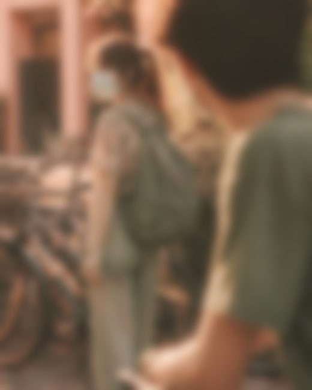
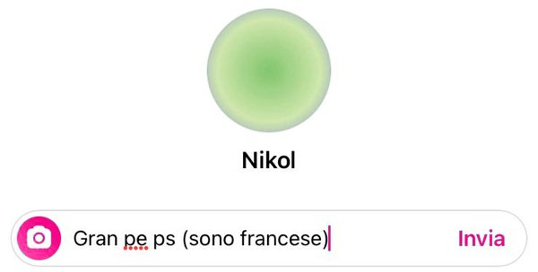
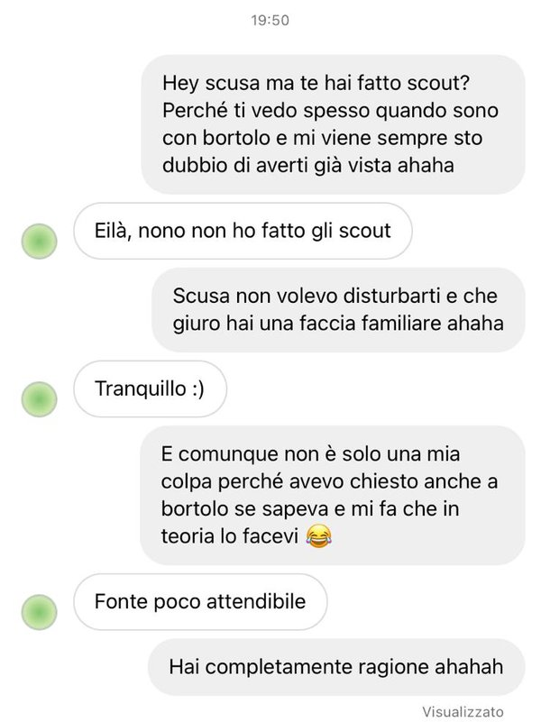

Il primo giorno
Il primo giorno me lo ricordo benissimo. Benissimo. Ci sono cose che col tempo si sbiadiscono, si confondono con tutto il resto. Questa no. La prima volta che ti ho vista ce l'ho ancora davanti agli occhi, come se fosse ieri.
Ero fuori da scuola, alle biciclette, con Bortolo. Una giornata qualunque, di quelle in cui non succede niente e non ti aspetti niente.
Bortolo ti ha detto ciao. Un ciao normale, veloce, di passaggio. E io ti ho vista.
Non mi era mai capitato un colpo di fulmine così. Anzi, non mi era proprio mai capitato, il colpo di fulmine. Ne avevo sentito parlare, pensavo fosse una cosa da film, una cosa che succede agli altri.
E invece è stato… wow. Proprio wow. Non ho altre parole, nemmeno adesso.

Me lo ricordo com'eri, ogni dettaglio:
- la mascherina
- la camicia a fiorimi sembra
- i pantaloni verdognoli
- lo zainettoquello me lo ricorderò sempre
E lo zainetto… appena l'ho visto ho pensato: no, questa è una ragazza semplice. Uno zainetto un po' da montagnetta, verde. Divertente. Una cosa piccola, che però diceva già tanto di te.
È stato solo un ciao. Niente di più. Non ci siamo nemmeno parlati davvero. Eppure da lì è partito tutto. Tutto, tutto, tutto.
Mi ricorderò sempre: torno a casa e la prima cosa che faccio è scrivere a Bortolo.
Anche adesso, a pensarci, fa un po' ridere. Ma lui era serio: stai attento, perché non è una che cerca qualcosa. Lei di queste cose è proprio fuori.
Allora l'ho scritto a Sasmus. E Sasmus mi ha detto più o meno la stessa cosa. Anzi, peggio: che piacevi anche a lui.
Io ho detto: no, dai. Vabbè. Ma ormai era troppo tardi. La testa era partita, e non c'era modo di fermarla.
cosa posso scriverle?
cosa posso scriverle?
cosa posso scriverle?

Ci ho pensato non so quanto. Ogni frase mi sembrava sbagliata: troppo, troppo poco, troppo strana. E alla fine, l'idea della vita:

Quella risposta me la ricorderò per sempre. “Eilà, nono non ho fatto gli scout.” E a me bastava che mi avessi risposto.
La conversazione però è durata poco. Ti ho detto che me l'aveva detto Bortolo, e tu: “Fonte poco attendibile.” E io lì ho pensato che ti piacesse Bortolo. E ho chiuso la conversazione. Così, di colpo, senza nemmeno salutare bene.
Pensavo che fosse finita ancora prima di cominciare.
qualcosa ancora c'era.